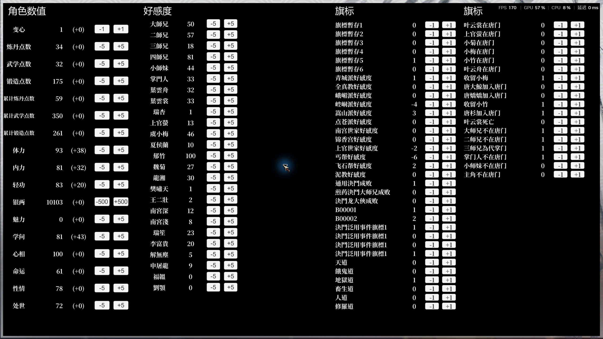
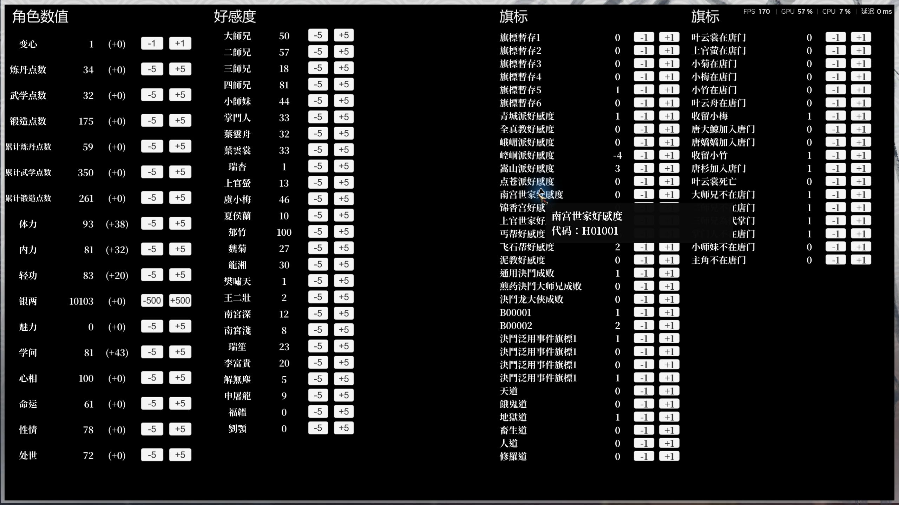

2026-10-16，游戏 release_1.0.6000.2，2560 × 1440，ScriptTrainer 1.1.2。图片为游戏窗口原始截图。
上版只调整了名称框高度，数值与按钮仍沿用原布局；名称自动缩字号，导致长短名称大小不同。现将原生 51 项旗标排为两列固定布局：共用角色数值的正文宋体，名称、数值、按钮文字均为 20 号、28 单位行框，行距固定为 28，垂直居中。两列间保留间距，全部旗标在一页显示。
悬浮提示曾同时追加映射名称和原始说明，简繁体差异绕过了相等判断。现在仅显示一次名称和一行代码，不再追加原说明。


点击第一行 A00001 的加号，数值从 0 变为 1；点击减号恢复为 0。关闭菜单、移开鼠标后重新打开，字体和行布局保持一致，无残留悬浮框。
43 项调试菜单检查通过，包含 H01001 简繁体原始说明不重复的回归用例。411 个原生成员引用、121 个 Harmony 目标、33 个反射成员全部解析通过。
本轮实测后恢复原有 122 个存档文件，122 个哈希全部一致。构建、发布目录、游戏目录与 ZIP 中的插件哈希一致。插件和游戏的原始运行日志保留在本地。